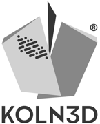

I’m Nate, a biomedical engineer from Hong Kong with a first-class
BEng from City St George’s, University of London, and an MSc in
Medical Robotics and Artificial Intelligence from UCL.
I work where physiological signals, embedded hardware and medical
devices meet: the point where an idea has to become something
testable, whether that is a control circuit, an analysis pipeline
or a clinical workflow that someone else can run.
01
Build
From a breadboard ECG amplifier and gate-level alarm logic to
EMG firmware and a tendon-driven, 3D-printed hand.
02
Measure
Validation designed in from the start, assumptions checked
before a test is chosen, and negative results reported as
negative.
03
Translate
Implant follow-up at KOLN 3D, a funding case for OsteoTrack,
an EU MDR route for a research robot and launch work at
Zortex.
Experience
Technical work in its wider context.
Zortex
Product & Commercial · Jul 2026 – Oct 2026 · Hong Kong / AI
Start-up
Product Launch, Pitch & Market Validation
Early product and commercial work for ZortexHQ, an AI start-up
building a desktop assistant that links everyday apps and personal
data to AI.
Built and shipped the zortex.me waitlist end to end, from the
sign-up flow to an admin dashboard that measures user demand.
Produced the company pitch deck, translating the technical
architecture into commercial positioning.
Ran cold outreach to prospective users and investors, including
angel investors and insurance firms, to test product-market fit
for a B2B sales motion.

KOLN 3D
Summer Intern · Jun 2024 – Aug 2024 · Hong Kong / Medical
Technology
Clinical Follow-Up & Surgical Outcome Data System
Built automated clinical and production workflows for a medical
metal 3D-printing company, supporting post-operative implant
feedback collection, patient/surgeon outcome tracking, and
production planning.
Developed a REDCap-based automated follow-up workflow.
Automated a production Gantt chart using Excel VBA and Power
Automate.
Created an internal guide on how to create a CNC mould to allow
6 DOF for CNC drilling.
Designed 3D-printed display models for commercial use.
Summer Intern · Jun 2023 – Aug 2023 · Hong Kong / Logistics &
Operations
Supply Chain Coordination & Order Fulfilment
Supported end-to-end order fulfilment and coordinated supply chain
operations across quality control, logistics, invoicing, and
international customer delivery.
Tailored product selection depending on enquiry.
Conducted quality control for textile samples being delivered to
clients.
Supported logistics and invoice handling.
Provided customer delivery support for international brands.
Gained operational exposure to major retail supply contracts.
Audrey Market
Marketing Intern · Jun 2022 – Aug 2022 · Hong Kong / Retail &
Commercial Strategy
Planned e-commerce marketing campaigns, supported merchandise
strategy, managed inventory clearance, and contributed to
improvements in sales and customer engagement.
Planned Meta advertising campaigns.
Created AI-assisted visual assets.
Supported tactical stock clearance strategy.
Assisted with physical retail store clearance support.
Contributed to customer engagement and sales growth.
Education
A foundation in engineering. A focus on healthcare.
University College London
MSc Medical Robotics and Artificial Intelligence
Medical Robotics · Artificial Intelligence · Biosignals · Data
Analysis · Medical Devices
Sep 2025 – Sep 2026
Merit
City St George’s, University of London
BEng Biomedical Engineering
Signal Processing · Biomedical Instrumentation · Medical Physics
· Microcontrollers · Medical Device Development
Sep 2022 – Jun 2025
First Class Honours
Projects
From Year 2 labs to an MSc dissertation.
How my work has evolved
Two threads run through my work. Each step draws on the ones before, both in what I built and in how I tested and reported it. Projects that stand on their own are listed separately.
Biosignals
From a breadboard amplifier to statistically tested brain-signal analysis
I’m interested in opportunities in biomedical engineering, medical
robotics and medtech. If my work fits what you’re building, I’d
like to hear from you.